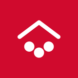
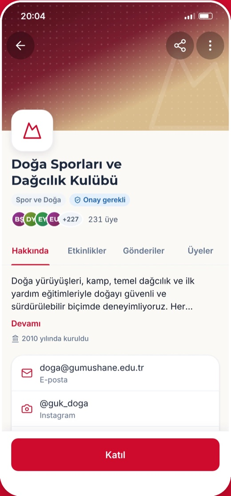
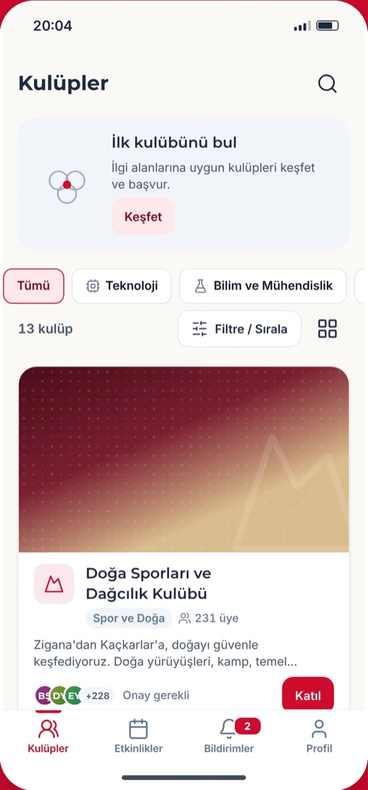
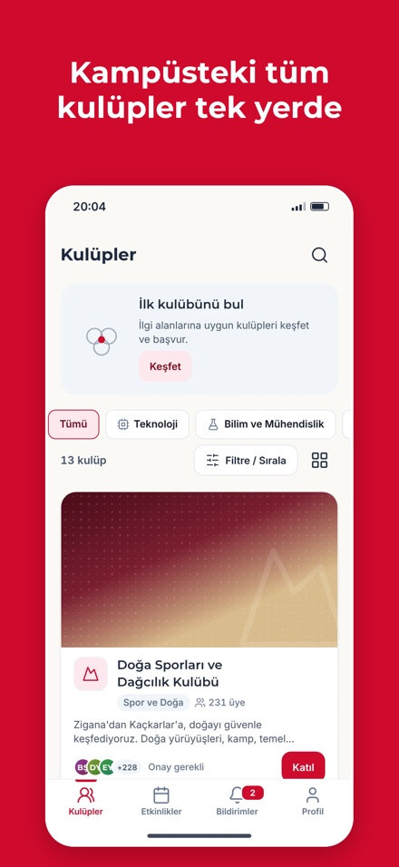
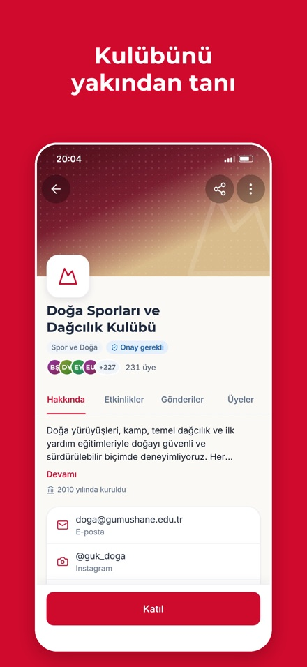
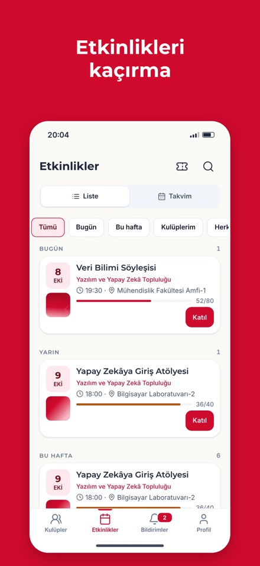
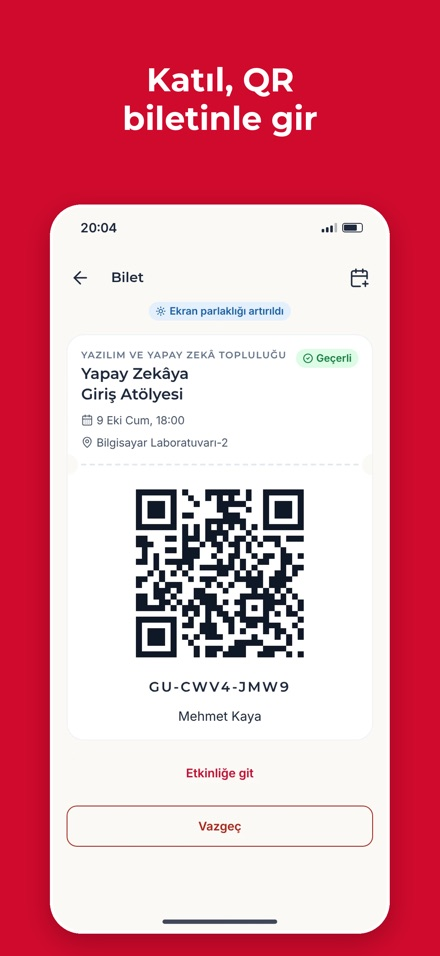
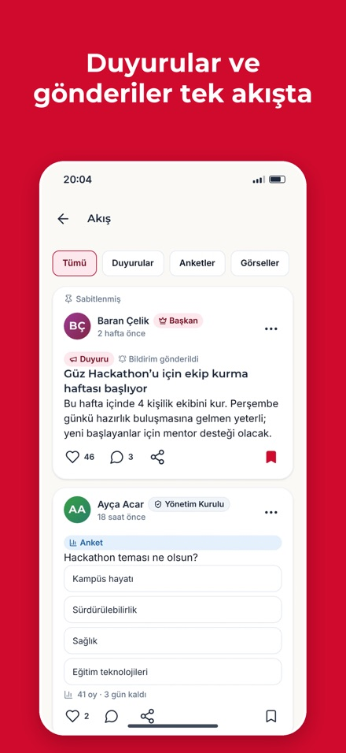
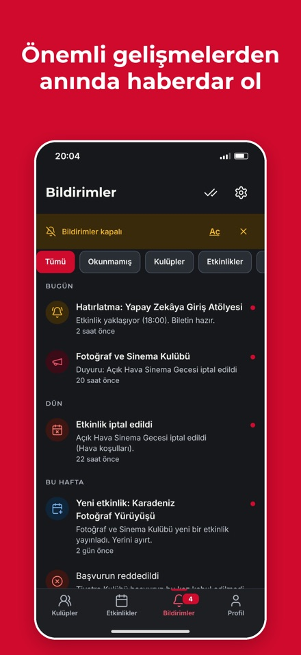
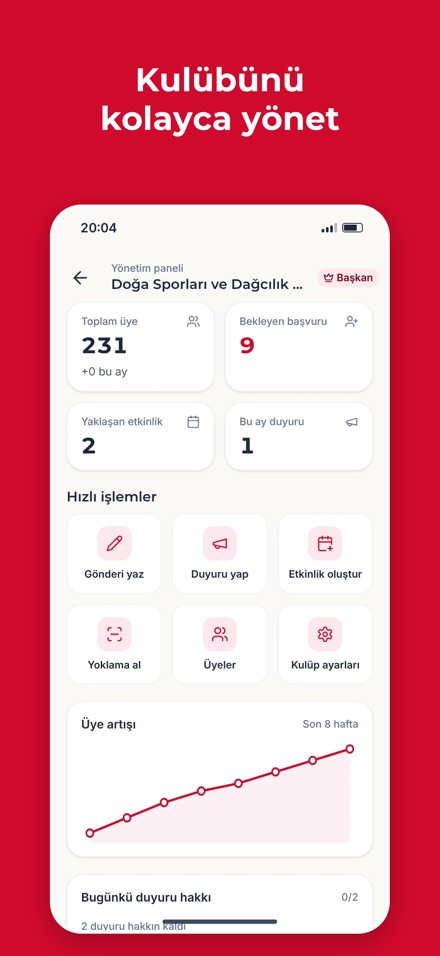

Girişimcilik Projesi · Gümüşhane Üniversitesi · 2026GÜ Kulüpler
Kampüsteki tüm öğrenci kulüpleri, tek uygulamada.


Kulüp bilgisi beş farklı yere dağılmış durumda
- Duyurular WhatsApp gruplarında kayboluyor
- Hangi kulüp ne yapıyor, nasıl katılınır bilinmiyor
- Başvuru kâğıtta ya da DM'de; sonucu takip edilemiyor
- Etkinlik katılımı ve yoklama elle tutuluyor
Üç paydaş, tek platform
Keşfet ve katıl
- İlgi alanına uygun kulübü bul
- Tek dokunuşla başvur, durumu takip et
- Etkinliğe kaydol, QR biletle gir
Kulübü yönet
- Başvuruları onayla / reddet
- Üye, rol ve başkanlık devri
- Etkinlik, duyuru, QR yoklama
Görünürlük ve denetim
- Tüm kulüpler tek yerde
- Kulüp açma / askıya alma
- Şikayet ve kullanıcı denetimi
Öğrenci kulüp hayatının tamamı tek uygulamada
Kulübünü bul, birkaç dokunuşla başvur
Kategori süzgeci, arama ve ilgi alanına göre öneriler. Kulüp sayfasında amaç, yönetim kurulu, danışman, gönderiler ve etkinlikler bir arada.


Kâğıtsız etkinlik: kayıt, bilet, yoklama
Kontenjan dolunca bekleme listesi; yer açılınca otomatik terfi ve bildirim. Girişte QR bilet okutulur, yoklama anında kaydedilir. Takvime ekleme ve hatırlatıcı.


Kulüp iletişimi ve yönetimi aynı yerde



Kayıttan etkinlik kapısına yedi adım
Herkes yalnızca kendi işini görür
Kulüpleri keşfeder, başvurur, herkese açık etkinliklere katılır.
Kulüp içi gönderileri, üye listesini ve üyelere özel etkinlikleri görür.
Başvuruları değerlendirir, etkinlik ve duyuru yayınlar, yoklama alır.
Rolleri atar, kulüp ayarlarını yönetir, başkanlığı devreder.
Akademik danışman kulübü izler, yönetimi görür.
Kulüp açar / askıya alır, şikayetleri ve kullanıcıları denetler.
Tek kod tabanı, üç platform, sunucusuz arka uç
Flutter ile iOS, Android ve web aynı koddan çıkıyor. Katmanlar tek yönlü: ekran → ViewModel → repository → servis → Firebase. Sunucu kiralama ve bakım yok.
Tasarımdan koda birebir, 51 ekran
Tasarım sistemi
Renk, boşluk, yazı ve ikonlar token'dan. Kodda sabit değer yasak; otomatik denetleniyor.
İki dil, iki tema
Türkçe ve İngilizce; açık ve koyu tema. Metinlerin tamamı çeviri dosyalarında.
Her ekran boyutu
320 dp küçük telefondan tablete; metin ölçeği 1.0 / 1.3 / 1.6'da taşma yok.
Erişilebilirlik
Ekran okuyucu etiketleri, 44 pt dokunma alanı, AA renk kontrastı.
Kurallar sunucuda, veri asla kaybolmaz
Güvenlik kuralları
Rol × işlem matrisi sunucuda uygulanır. Arayüzden atlanamaz.
Soft delete
Hiçbir kayıt kalıcı silinmez; silinen işaretlenir, sayaçlar aynı işlemde güncellenir.
Otomasyon
Push dağıtımı, bekleme listesi terfisi, gece hesap silme temizliği.
Anlık kontrol
Bakım bandı ve zorunlu güncelleme, yeni sürüm çıkmadan açılır.
KVKK uyumlu, yayından önce denetlendi
Kapsamlı güvenlik denetiminde 16 bulgu çıktı: 13'ü düzeltildi, 3'ü doğrulamada elendi. Kritik bulgu yok.
Üniversite e-postası
Kayıt ve e-posta doğrulaması; sahte hesaba karşı ilk kapı.
E-posta gizli
Profilde görünmez; yalnızca ilgili kulüp yönetimi görür.
Şikayet ve engelleme
Uygunsuz içerik bildirilir, yönetici inceler.
Hesap silme
Uygulama içinden; kişisel veri anonimleştirilir.
Rakamlarla proje
Her değişiklik önce kalite kapısından geçer: biçim, statik analiz, katman sınırı, sabit değer ve kalıcı silme yasağı, çeviri eşitliği, testler ve kapsam eşikleri.
10 günde 8 faz, 48 görev, 206 commit
Bugün üç platformda canlı
iOS
App Store incelemesinde; TestFlight ile beta.
Android
APK, GitHub Releases'ta. Google Play sırada.
Web
Kurulumsuz, tarayıcıdan.
gu-kulupler.web.app/appKaynak kod
MIT lisansı, herkese açık.
github.com/muhammedeminalan/gu_kuluplerBugünkü araçlar iletişim kurar, yönetmez
| Özellik | WhatsApp grubu | Kâğıt form / pano | GÜ Kulüpler | |
|---|---|---|---|---|
| Duyuru ve iletişim | ✓ | ✓ | kısmen | ✓ |
| Tüm kulüpleri tek yerde keşif | — | kısmen | — | ✓ |
| Başvuru ve sonuç takibi | — | — | kısmen | ✓ |
| Etkinlik kontenjanı, bekleme listesi | — | — | — | ✓ |
| QR bilet ve yoklama | — | — | — | ✓ |
| Rol bazlı yetki, denetim | — | — | — | ✓ |
| KVKK uyumlu, kampüse özel | — | — | kısmen | ✓ |
Öğrenciye her zaman ücretsiz ve reklamsız
Üniversite işbirliği
Sağlık, Kültür ve Spor Daire Başkanlığı'nın resmî kulüp platformu olarak lisans ve destek sözleşmesi.
Diğer üniversiteler
Aynı altyapı kampüs başına kurulur; kurum başına yıllık abonelik. Kod zaten çok dilli ve yapılandırılabilir.
Sponsorlu etkinlikler
Yerel işletme ve kurumlar kulüp etkinliklerine sponsor olur; öğrenciye reklam gösterilmez.
İlk dönem için ölçülebilir hedefler
Etkin kulüplerin platformda olması
Kulüp başvurularının uygulamadan yapılması
Kâğıtla tutulan etkinlik yoklaması
Başvuru sonucunun öğrenciye ulaşma süresi
Öğrenciye: tek yerden keşif ve katılım. Kulübe: daha az elle iş, daha çok etkinlik. Üniversiteye: kulüp hayatına tek ekrandan görünürlük. Değerler hedeftir, ölçüm yayından sonra başlar.
Sıradaki adımlar
Planlar herkese açık yol haritası panosunda ve GitHub'da iş olarak takip ediliyor.